De 03 a 09 de agosto de 2026, às 22h — ao vivo.
Participe do Cerco de Jericó e veja Deus agir em sua vida profissional, familiar e pessoal.
Com o Diácono Romulo CanutoDerrubar as muralhas que te impedem de alcançar sua benção.
"Eu sou o Diácono Romulo Canuto, e durante 7 noites conduzirei você em uma jornada de fé e oração para derrubar as muralhas que impedem as bênçãos em sua vida. Juntos vamos viver uma experiência transformadora."
Quando o povo ouviu o som da trombeta e deu um forte grito de guerra, o muro caiu; e cada um subiu direto para dentro da cidade, e eles a conquistaram.Josué 6, 20
Sem formulários. Um clique e você já está dentro — os links das transmissões, os lembretes e os avisos do Cerco chegam direto no seu WhatsApp.
De 03 a 09 de agosto de 2026, às 22h, ao vivo.
Participe e veja Deus agir na sua vida.
Um propósito diferente a cada noite. Marque no seu calendário e caminhe conosco até a queda das muralhas.
O próximo pode ser o seu.
"Após o Cerco de Jericó, consegui o emprego dos meus sonhos! As portas se abriram de forma sobrenatural. Glória a Deus!"
"Meu casamento estava destruído. Durante as 7 noites, Deus restaurou nossa família completamente. Hoje somos mais unidos que nunca!"
"Estava com depressão há anos. No terceiro dia do evento, senti uma paz sobrenatural. Hoje sou uma nova pessoa!"
"Vivia sufocado por dívidas. Durante o Cerco, minha vida financeira começou a se reerguer. Deus honrou a minha fé!"
"Tentava engravidar há 8 anos. No último dia do evento, recebi a confirmação: estava grávida! Meu milagre chegou!"
"Estava perdido em vícios há 15 anos. Durante o Cerco, Deus me libertou completamente. Hoje ajudo outros a se libertarem também!"
Não perca esta oportunidade única de participar do Cerco de Jericó.
Sua inscrição é gratuita e você recebe todas as informações pelo WhatsApp.